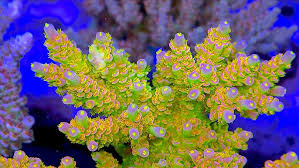

Acropora Care
Acropora Care
Acropora are often considered the crown jewel of the SPS coral world. This genus includes many species with a wide range of colors and growth patterns. Acropora are among the most difficult corals to keep because they are highly sensitive to changes in water chemistry and require strong water flow, intense lighting, and stable aquarium conditions.

Location
Acropora are found throughout the Indo-Pacific, including Fiji, Tonga, the Solomon Islands, and the Great Barrier Reef. Many species grow in shallow reef environments where they receive strong light and constant water movement.
Lighting
Acropora generally require high-intensity lighting. They can be kept under strong LED, T5 fluorescent, or metal halide lighting systems. Their coloration may change depending on light intensity, spectrum, and placement within the aquarium.
- Low Light: 30–50 PAR
- Medium Light: 50–150 PAR
- High Light: More than 150 PAR
Water Flow
Strong, variable water movement is recommended. Acropora are highly dependent on good flow to deliver nutrients, remove waste, and prevent detritus from collecting between branches. Water movement should be checked regularly as colonies grow and begin to change flow patterns.
Feeding
Acropora receive much of their energy from photosynthesis, but they may also benefit from fine coral foods, rotifers, and other small marine foods. Frozen foods should be thawed before being gently directed toward the colony with a feeding tool or turkey baster.

Propagation
Acropora are widely propagated in home aquariums and commercial coral farms. Healthy branches can be cut into fragments and attached to coral plugs. With stable conditions, these fragments can grow into new colonies and support sustainable aquaculture.
A Word of Caution
Acropora are not recommended for beginners. They are sensitive to rapid tissue necrosis, slow tissue necrosis, pests, infections, and sudden changes in temperature, salinity, alkalinity, or nutrient levels. Consistent testing and aquarium maintenance are essential.
Acclimation
Acropora should be acclimated slowly after shipping or transport. Carefully match temperature and salinity, then introduce the coral to stronger lighting gradually. Sudden changes in light or water chemistry can cause bleaching or tissue loss.